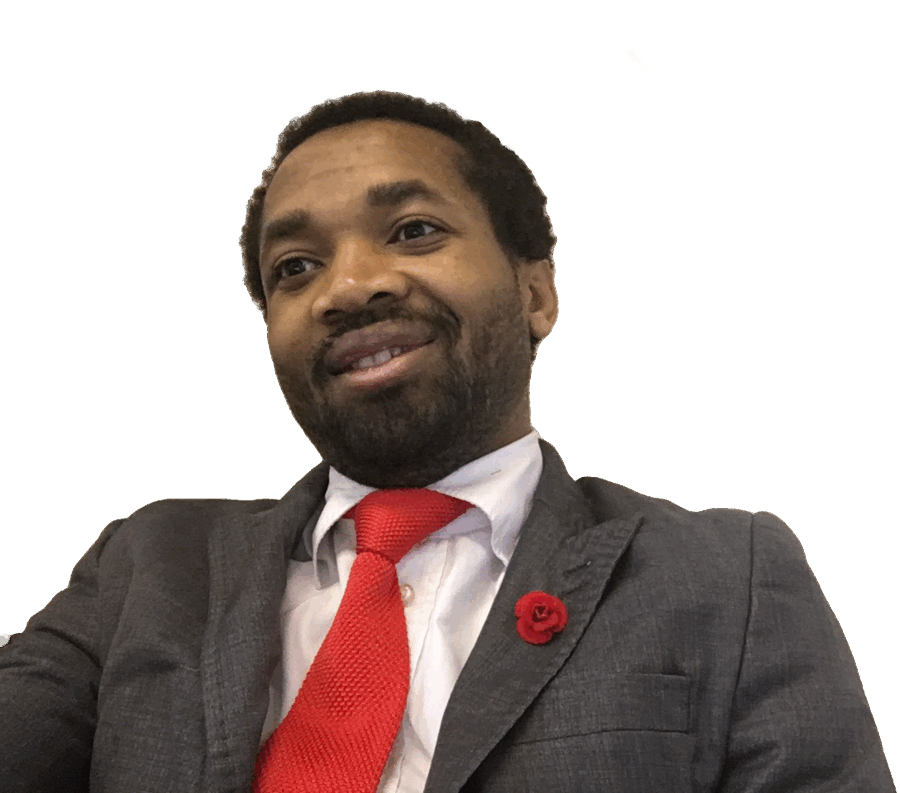

Meet the author
Bestenouf Abba Business
A teacher, reader, writer, athlete, and lifelong learner. Curiosity shapes his work; faith in God through Jesus Christ gives his life meaning and purpose.

Learning that moves both ways
Bestenouf Abba Business entered formal education at two and a half years old, and he has not slowed down since. He has spent five years and eight months teaching in high school, where he has come to believe that the best classrooms run on genuine curiosity, shared in both directions.
The world and the page
In 2016, he volunteered at the Rio Olympics, the first Summer Games hosted on South American soil, and returned home with a sharpened sense of how athletics and community intersect at the highest levels. He reads widely and with discipline, making regular room for The New Yorker, The Economist, and The Atlantic.
For him, writing is not a profession set apart from living; it is how he processes and participates in the world.
Outside the page, he plays soccer with conviction, competes in table tennis, plays ‘Whot’ card games with no shortage of strategy, and finds genuine recreation on PlayStation.
Faith at the center
His faith is central to everything. He walks daily in a personal relationship with God through Jesus Christ, sustained by the active presence of the Holy Spirit. Bestenouf acknowledges and remembers the direct and indirect teachers he has had and their shaping impact on his life, including his parents and siblings, especially his older brothers; teachers at school; the Church; and books. But he maintains that the Holy Spirit is His Permanent Great Teacher, not experience.
The next chapter
In the fall of 2027, he will begin his probationary doctoral studies at the University of Cambridge. He is single and loves people with a sincerity that asks nothing in return.
A conviction that guides his work
Bestenouf strongly believes you have to take your relationship with Father God through Jesus Christ seriously, value family, truly love people, sincerely desire to be a blessing, and enjoy reading to avoid being a potboiler.